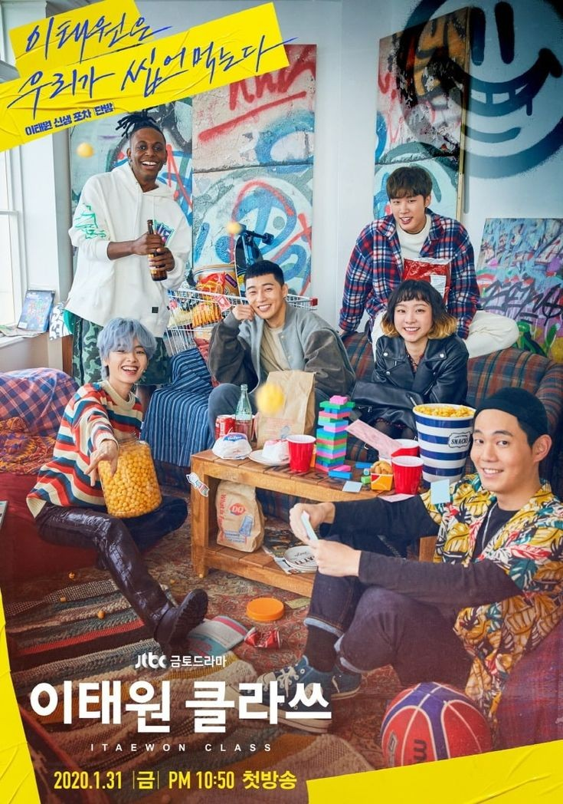
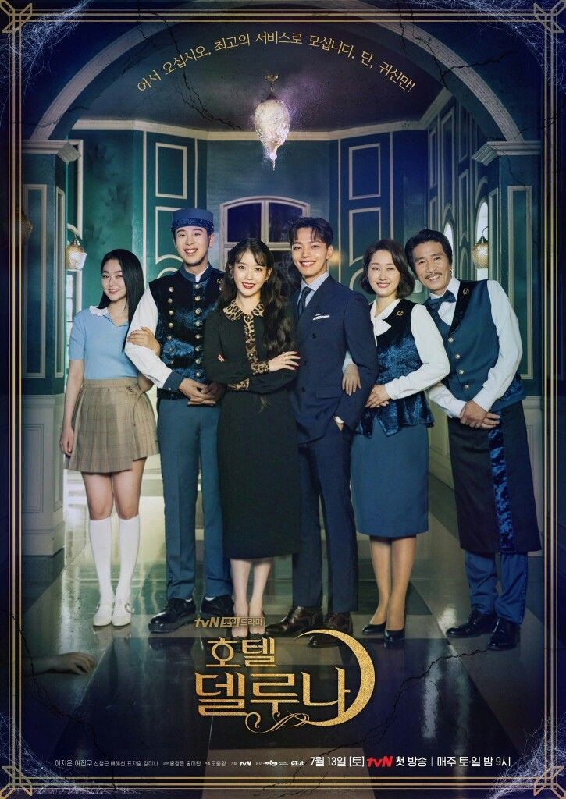

MOVEMENT CONTROL ORDER (MCO)
It is been a month since i am home and MCO started. Honestly, at first it is easy to stay at home without going out but, it is only lasted for 1 week.
Since i am not a homebody, staying at home is so difficult '(. So i tried everything i can to make sure i am not bored by staying at home.
Before i start sharing my experience during MCO, i will summarize what it is mean by MCO. Movement Control Order (MCO)
was first enforced on March 18, but was extended before its expiration on April 14 to April 28.
It is an ongoing effort to break the chain of Covid-19 infection in the country.
MCO Experiences
I don't know if experiences is the suitable word to use but for me it is more to 'what did i do during MCO'.
1. Watching Kdrama and Kvariety
Kdrama
Since one of my hobbies is watching kdrama and kvariety, i spend most of my time watching it.
I prefer download any kdrama and watch it offline rather than watch it online. It is because i think it is such a hassle to wait for the drama to load.
I also has a habit that when i see any advertisement or video from the previous drama, i like to rewatch it.
There are a few kdramas that i have been rewatch such as Goblins and Descendents of The Sun. I think the more i rewatch the dramas,
the more i understand the direct and indirect messages in those dramas.
If you want to watch any k-drama, the link is as below:
|  |  | ||
|---|---|---|---|
| ITAEWON CLASS (2020) | HOTEL DEL LUNA (2019) | WHILE YOU WERE SLEEPING (2017) | OH MY VENUS (2015) |
K-variety
Just as how i stated above, I prefer to download kvariety which i want and watch it offline. As for variety shows, it is 1 episode per week.
At the end of the week, i will download the variety show and watch it. The k-variety that i watch are runningman and i live alone.
If you want to watch any k-variety, the link is as below:
 |
|
|---|---|
| RUNNINGMAN | I LIVE ALONE |
2. Try and Error
During this MCO period, i had tried several new recipes with my mum's help. I do not have the picture of the food
but i only have the video which i record it for my Instagram Stories. I watched the recipe from youtube and it is going well.
If you want to try it, you can just click the links below:
3. Farming
Every morning, my parents asked us to help them farming outside. The first day of farming, we rearranged the pots and plant new trees.
Yesterday, we plant new roses in our little garden. We had for about 20 pots of new roses. I hope it is blomming well.
I am still waiting for sunflower seeds since it is my favourite flower. I've been searching for those seeds for about 2-3 weeks but there is none.
 |
 |
 |
|---|
4. Tiktok-ing
Tiktok virgin? Say no more.
I started wacthing tiktok since last year. Suprisingly it is more informational than the other social media. Since i am bored during MCO,
i asked my close friends during diploma to send me their pictures and edit it.